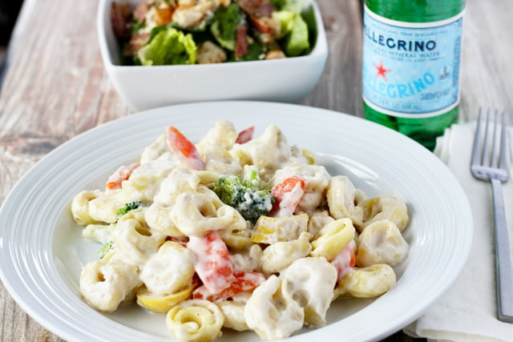

Tortellini mit Schinken und Sahnesoße

Tortellini von der besten.
Diese Tortellini stammen von Instagram.
Das wird benötigt:
- Tortellini mit Käse oder Spinatfüllung
- Wacholderschinken
- Kräuter (Pfeffer, Salz)
- Rama Cremefine 7% Sahne
Zubereitung:
- Tortellini mit Cremefine und Wacholderschinken in der pfanne
auf mitlerer Hitze erhitzen.
- Kräuter hinzufügen und abschmecken
Guten Hunger!